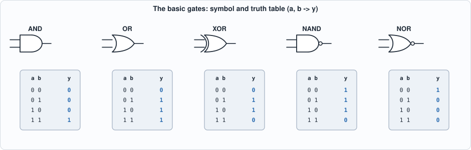
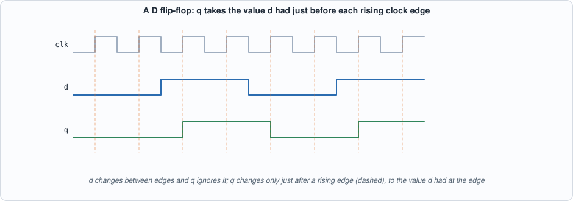
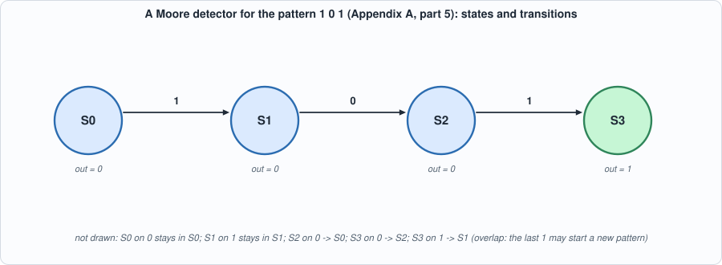

Appendix A. Digital Logic¶
About the animals in this picture and where they are standing
- Domestic goat (Capra hircus) descends from the bezoar ibex and is among the oldest domesticated animals. There are on the order of a billion of them, kept for milk, meat, fibre and as pack animals.
- Alpine ibex (Capra ibex) lives in the European Alps, usually above the tree line on steep rock, and is a famously sure-footed climber. Males carry horns that can reach about a metre. Hunting left only a small remnant, around the Gran Paradiso in Italy, by the early 1800s; reintroductions have since restored it across the Alps.
- Bezoar ibex (wild goat) (Capra aegagrus) lives from Turkey and the Caucasus through Iran to Pakistan. It is the wild ancestor of the domestic goat, which people began keeping some ten thousand years ago.
- Nubian ibex (Capra nubiana) lives in the rocky, arid hills of north-east Africa and the Arabian Peninsula, from the Sinai and Egypt south to Sudan and Ethiopia. Its coat matches the desert rock, and the males' ridged horns sweep back like a sickle.
The scene is imaginary: it is set on Earth, with its Moon in the sky. The animals are stylised drawings, shown where they could not live, for effect.
Who this is for: readers who have not built digital circuits before, or have forgotten how. It is the background for Chapters 1-5 and for the Verilog of Appendix B. What you will do: build adders out of NAND gates, simulate flip-flops and a state machine cycle by cycle, and work out why a clock has a speed limit. Every number below comes from tools/appx_a.py, whose recorded output is part of this page.
Bits, gates and truth tables¶
A digital circuit works with signals that are, at each moment, one of two values: 0 or 1 (low or high voltage). A gate computes one output bit from one or two input bits. Its whole behaviour fits in a truth table: one row per combination of inputs.

Figure A.1: the basic gates. AND is 1 only if both inputs are 1; OR if either is; XOR if exactly one is (it is addition of one-bit numbers without the carry); NAND and NOR are the inverses of AND and OR.Gates are cheap and fast in hardware, and one fact makes the whole subject manageable: NAND alone is enough. NOT is a NAND with its inputs tied together, AND is a NAND followed by a NOT, OR is a NAND of two NOTs, and XOR takes four NANDs. The script builds all four from nand only and checks them against Python's own operators on every input. Real chips use libraries of a few dozen cell types (Chapter 10) because NAND-only logic is bigger and slower than logic that uses the cell that fits.
Combinational circuits: adders¶
A combinational circuit has no memory: its outputs depend only on its present inputs. The central example is binary addition. One column of an addition has two input bits and a carry in; it produces a sum bit and a carry out. That is a full adder: sum = a XOR b XOR cin and cout = (a AND b) OR ((a XOR b) AND cin). Chain four of them, the carry of each feeding the next, and you have a 4-bit ripple-carry adder, which the script checks on all 512 combinations of its inputs.
The carry of the top bit cannot be known until the carry of every bit below it has been computed: the delay grows in proportion to the width (the script prints about 2n + 2 gate levels for n bits). A lookahead (or prefix) adder computes the carries with a tree of logarithmic depth, at the price of more gates. Chapter 10 builds both and measures them. The lesson is general: the same function can be built in different structures, with a trade-off between area and speed.
Sequential circuits: flip-flops and the clock¶
A flip-flop remembers one bit. The D flip-flop has an input d, an output q and a clock; on each rising edge of the clock it copies d to q and holds it until the next edge. Everything between edges is combinational logic computing the next ds from the current qs. This is the synchronous style of design: all state changes happen together at the clock edge, so the circuit moves in discrete steps and can be reasoned about one step at a time.

Figure A.2: q takes the value d had at the rising edge (dashed lines). The changes of d between edges are ignored.The script's clocked simulator makes this concrete: a 4-bit shift register (each edge moves every bit one place left and takes the new bit in at the right) and a 2-bit counter with enable. In both, the next state is computed from the current state and input and all flip-flops change together; that is what <= means in Verilog (Appendix B).
Finite-state machines¶
Control logic is usually a finite-state machine: a set of states, a rule giving the next state from the current state and the input, and an output that depends on the state (a Moore machine) or on the state and the input (Mealy). Hardware stores the state in flip-flops and computes the rule with combinational logic. The example is a detector for the pattern 1 0 1 (overlapping matches allowed): four states remember how much of the pattern has been seen. The script runs it on a 16-bit stream and compares it with a direct "look at the last three bits" reference: the outputs are identical.

Figure A.3: the detector. Chapter 7's sequencer, which fetches and issues one instruction at a time, is a larger machine of the same kind.Why a clock has a speed limit¶
Between two flip-flops the signal must travel through the combinational logic and arrive before the next edge, a little early (the setup time). So the clock period must satisfy
period >= clock-to-q (time for the first flip-flop's output to change)
+ logic delay (the longest path through the gates)
+ setup time (of the second flip-flop)
This is static timing analysis (Appendix G) in one line. The script evaluates it with assumed delays: a 4-bit ripple adder between registers allows about 370 MHz, a 32-bit ripple adder only 60 MHz, a 32-bit lookahead adder about 227 MHz. A faster clock needs a shorter longest path: smaller logic between registers (more pipeline stages, Chapter 10) or faster structures. These delays are made-up round numbers for illustration, not those of any real process.
Running the examples¶
#!/usr/bin/env python3
"""Appendix A (digital logic): runnable checks of the ideas of the primer. Pure Python. Usage: appx_a.py"""
import itertools, re
print("== 1. gates are functions of bits: the truth tables of the basic gates")
G = {"AND": lambda a, b: a & b, "OR": lambda a, b: a | b, "XOR": lambda a, b: a ^ b, "NAND": lambda a, b: 1 - (a & b), "NOR": lambda a, b: 1 - (a | b), "XNOR": lambda a, b: 1 - (a ^ b)}
print(" a b | " + " ".join(f"{n:>4s}" for n in G))
for a, b in itertools.product((0, 1), repeat=2): print(f" {a} {b} | " + " ".join(f"{G[n](a, b):4d}" for n in G))
print("\n== 2. NAND alone is enough (universality): build NOT, AND, OR, XOR from NAND gates only and compare with the real operators on every input")
nand = G["NAND"]; NOT = lambda a: nand(a, a); AND = lambda a, b: NOT(nand(a, b)); OR = lambda a, b: nand(NOT(a), NOT(b))
def XOR(a, b): n = nand(a, b); return nand(nand(a, n), nand(b, n))
ok = all(NOT(a) == 1 - a and AND(a, b) == (a & b) and OR(a, b) == (a | b) and XOR(a, b) == (a ^ b) for a in (0, 1) for b in (0, 1))
print(f" NOT = 1 NAND, AND = 2 NANDs, OR = 3 NANDs, XOR = 4 NANDs; all four agree with Python's operators on all inputs: {ok}")
print("\n== 3. combinational circuits: a full adder from gates, then a 4-bit ripple adder checked on all 512 input combinations")
def full_adder(a, b, c): p = XOR(a, b); return XOR(p, c), OR(AND(a, b), AND(p, c))
def ripple4(a, b, cin=0):
s = 0; c = cin
for i in range(4): bit, c = full_adder((a >> i) & 1, (b >> i) & 1, c); s |= bit << i
return s | (c << 4)
bad = [(a, b, c) for a in range(16) for b in range(16) for c in (0, 1) if ripple4(a, b, c) != a + b + c]
print(f" 512 cases (a, b in 0..15, carry-in 0/1): {512 - len(bad)} correct, {len(bad)} wrong")
print(" the carry of bit i depends on the carry of bit i-1: depth of the ripple adder in gate levels: 2 per bit for the carry (AND-OR) + 2 for the last sum:")
for n in (4, 8, 16, 32, 64): print(f" {n:2d} bits: about {2 * n + 2:3d} gate levels (ripple); a lookahead adder needs about {2 * (n - 1).bit_length() + 4:2d}")
print("\n== 4. sequential circuits: a clocked simulator. State changes only on a rising edge, from the values BEFORE the edge")
def clocked(step, state, inputs):
trace = []
for x in inputs: state = step(state, x); trace.append(state)
return trace
print(" 4-bit shift register, input stream 1,0,1,1,0,0,1,0 (new bit enters at the right):")
shift = lambda s, x: ((s << 1) | x) & 15
for i, st in enumerate(clocked(shift, 0, [1, 0, 1, 1, 0, 0, 1, 0])): print(f" edge {i + 1}: {st:04b}")
print(" a 2-bit counter with enable (counts only when en = 1), reset at start:")
cnt = lambda s, en: (s + en) & 3
print(" states:", clocked(cnt, 0, [1, 1, 0, 1, 1, 1, 0, 0, 1]))
print("\n== 5. finite-state machine: a Moore detector for the pattern 1 0 1 (overlapping allowed)")
T_ = {("S0", 0): "S0", ("S0", 1): "S1", ("S1", 0): "S2", ("S1", 1): "S1", ("S2", 0): "S0", ("S2", 1): "S3", ("S3", 0): "S2", ("S3", 1): "S1"}
print(" state table (S3 means: the last three bits were 101; output 1 only in S3):")
for s in ("S0", "S1", "S2", "S3"): print(f" {s}: on 0 -> {T_[(s, 0)]}, on 1 -> {T_[(s, 1)]} output {1 if s == 'S3' else 0}")
bits = "1101011010101001"; s = "S0"; out = ""
for ch in bits: s = T_[(s, int(ch))]; out += "1" if s == "S3" else "0"
want = "".join("1" if bits[max(0, i - 2):i + 1] == "101" else "0" for i in range(len(bits)))
print(f" input {bits}\n output {out}\n reference (a window over the last three bits) {want} -> identical: {out == want}")
print("\n== 6. timing: why a clock has a speed limit (derived arithmetic, ASSUMED delays in ns)")
tcq, tsu = 0.30, 0.10
for name, tl in (("a 4-bit ripple adder between registers", 4 * 0.5 + 0.3), ("a 32-bit ripple adder", 32 * 0.5 + 0.3), ("a 32-bit lookahead adder", 8 * 0.5)):
T = tcq + tl + tsu; print(f" {name:42s}: path = clk-to-q {tcq} + logic {tl:.1f} + setup {tsu} = {T:.1f} ns -> at most {1000 / T:5.0f} MHz")
To compile and run: python3 tools/appx_a.py (instant; Python only). Recorded output:
== 1. gates are functions of bits: the truth tables of the basic gates
a b | AND OR XOR NAND NOR XNOR
0 0 | 0 0 0 1 1 1
0 1 | 0 1 1 1 0 0
1 0 | 0 1 1 1 0 0
1 1 | 1 1 0 0 0 1
== 2. NAND alone is enough (universality): build NOT, AND, OR, XOR from NAND gates only and compare with the real operators on every input
NOT = 1 NAND, AND = 2 NANDs, OR = 3 NANDs, XOR = 4 NANDs; all four agree with Python's operators on all inputs: True
== 3. combinational circuits: a full adder from gates, then a 4-bit ripple adder checked on all 512 input combinations
512 cases (a, b in 0..15, carry-in 0/1): 512 correct, 0 wrong
the carry of bit i depends on the carry of bit i-1: depth of the ripple adder in gate levels: 2 per bit for the carry (AND-OR) + 2 for the last sum:
4 bits: about 10 gate levels (ripple); a lookahead adder needs about 8
8 bits: about 18 gate levels (ripple); a lookahead adder needs about 10
16 bits: about 34 gate levels (ripple); a lookahead adder needs about 12
32 bits: about 66 gate levels (ripple); a lookahead adder needs about 14
64 bits: about 130 gate levels (ripple); a lookahead adder needs about 16
== 4. sequential circuits: a clocked simulator. State changes only on a rising edge, from the values BEFORE the edge
4-bit shift register, input stream 1,0,1,1,0,0,1,0 (new bit enters at the right):
edge 1: 0001
edge 2: 0010
edge 3: 0101
edge 4: 1011
edge 5: 0110
edge 6: 1100
edge 7: 1001
edge 8: 0010
a 2-bit counter with enable (counts only when en = 1), reset at start:
states: [1, 2, 2, 3, 0, 1, 1, 1, 2]
== 5. finite-state machine: a Moore detector for the pattern 1 0 1 (overlapping allowed)
state table (S3 means: the last three bits were 101; output 1 only in S3):
S0: on 0 -> S0, on 1 -> S1 output 0
S1: on 0 -> S2, on 1 -> S1 output 0
S2: on 0 -> S0, on 1 -> S3 output 0
S3: on 0 -> S2, on 1 -> S1 output 1
input 1101011010101001
output 0001010010101000
reference (a window over the last three bits) 0001010010101000 -> identical: True
== 6. timing: why a clock has a speed limit (derived arithmetic, ASSUMED delays in ns)
a 4-bit ripple adder between registers : path = clk-to-q 0.3 + logic 2.3 + setup 0.1 = 2.7 ns -> at most 370 MHz
a 32-bit ripple adder : path = clk-to-q 0.3 + logic 16.3 + setup 0.1 = 16.7 ns -> at most 60 MHz
a 32-bit lookahead adder : path = clk-to-q 0.3 + logic 4.0 + setup 0.1 = 4.4 ns -> at most 227 MHz
Self-check questions¶
- Build XOR from NAND gates only and count them. Check it on all four inputs by hand.
- How many input combinations must a test cover to check a full adder exhaustively? A 16-bit adder with carry in?
- In the shift register example, what is the register after three edges for the input stream 1, 1, 0 starting from 0000?
- Give the state table of a Moore machine that outputs 1 when the last two bits were both 1 (overlap allowed). How many states does it need?
- A path has clock-to-q 0.3 ns, logic 3.4 ns and setup 0.1 ns. What is the fastest clock? What happens if you clock it faster?
- Why can a flip-flop's
dchange between edges without changingq?